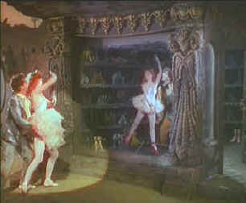

|
Red
Shoes/A,B |
|
Criterion/1948/133m/FS
1.33 |
A
classic back stage drama, The Red Shoes is the
crowning jewel of the Michael Powell/Emeric Pressburger
collaboration. Set in the world of ballet, it is at once a story
of the stage, a love story, and a tragic dissertation on the
sacrifices called for by art.
Though it's the story of a ballet
company and features an abundance of dance, you don't have to
love the ballet to love The Red Shoes. The conflict
between the demands of art and love are the heart of the film.
The characters make the dances seem all the more
important.
|
 |
|
Shearer
dances The Red Shoes ballet. ©Criterion |
The Red Shoes
stands up to repeated viewings, perhaps owing to the purity of
its fairy tale origins. Written, directed and produced by Michael
Powell and Emeric Pressburger, The Red Shoes is based
on the fairy tale by Hans
Christian Andersen. The ballet, written for the film,
reenacts the story in simple terms, but the film expands the
theme with splendid embellishment. Local ballerina Victoria Page
joins renowned Ballet Lermontov , is plucked from the
chorus by Boris Lermontov, falls in love with new company member
composer Julian Craster, and must choose between love and
art. It's a rather wonderful conceit, the story of the
ballet at the heart of the film and the heart of the film, the
ballet. The script glistens with backstage color and is filled
out with sumptuous locales. Above all, the larger than life
characters create a world set in perfect balance between the
proscenium arches.
Fortuitous casting makes The
Red Shoes soar beyond the obbligato leaps and pirouettes. Moira
Shearer, a stunning red-haired beauty, makes her screen
debut under the tutelage of Powell and Pressburger, and it's
almost as if character and actress are molded at the same time.
Shearer's screen innocence may have something to do with her
inexperience, but it makes for curtain calls in the role of
Victoria Page, ballerina of Ballet Lermontov. The company is
modeled after impresario Serge Diaghilev's Ballet Russe, the
legendary ballet company that boasted the likes of Nijinsky and
Pavlova in its company. Imperious Boris Lermontov is played
to perfection by Anton Walbrook. He wears a suit of
armor molded from the daily workings of his ballet company, but
through the cracks a more complex individual emerges. The speech
Lermontov delivers in a stiff, cracked voice to the audience at
the final performance of the film's signature ballet is nothing
short of haunting. The 36-year-old Marius Goring, playing
music student and composer Julian Craster, seems a tad worn
down, especially against the fresh bloom of Shearer. The rest of
the cast combines stars of the ballet in impressive screen turns
with seasoned actors of the British screen. Léonide Massine,
Robert Helpmann and Ludmilla Tcherina all add a seal of realism
to the production.
The Red Shoes does play like
stage art. This is the stuff of opera and the production
elements support it with grand purpose. The intense, saturated
color delivered by Jack Cardiff's Technicolor photography echoes
the fervor with which Powell's characters embrace their work.
Brilliant reds dominate the palette amplifying the passion to
achieve driving these artists . The physical beauty of the
production and the wonderful original score and standard ballet
music are fused to the plot, making the film work on multiple
levels. Set design is wonderful. Beyond the great, theatrical
outdoor locales of Paris, Monaco and London, the theaters are
dressed in authentic detail. Brian Easdale's score, including
the original music for the title ballet, melds seamlessly to the
classical ballet standards sprinkled throughout the
production.
This special film gets special edition
treatment from Criterion. Film historian Ian Christies leads an
audio commentary that includes the observations of Moira
Shearer, Marius Goring, Jack Cardiff, Brian Easdale and Martin
Scorcese. These shared memories of the production challenge
add to the overall experience of The Red Shoes. The
Red Shoes Sketches, an animated film created from the Hein
Heckroth storyboards for The Red Shoes is presented with
an alternate angle comparison of the actual film scenes. A still
presentation of Martin Scorcese's collection of memorabilia for
the film is included, as well as production stills and publicity
photos. The added value goes as Jeremy Irons reads excepts from
Powell and Pressburger's novelization of the film and the
original Hans Christian Andersen fairy tale. A
Powell/Pressburger filmography including film clips and stills
completes the exhaustive package.
The transfer for The Red Shoes
is likely going to be as good as you'll ever get. That doesn't
make it perfect, however. There are a number of soft scenes that
detract from the overall excellent quality of the transfer. The
color, the amazing color, transfers to DVD with the brilliance
of a flawed jewel. There is a subtle but consistent pulsing of
color that distracts from its pure glory. Otherwise, the
transfer elements are pretty clean, with a few patches of dirt
or scratches, but nothing significant. Contrast is excellent
throughout, adding to the power of the saturated color. You
won't see reds like this very often. The mono sound is very
clean with a slightly pinched range, but the music is a
consistent delight.
|
he
Feature
Archive has articles ranging from John
Ford to Blonde
Bimbos, The
Heistmasters, Akira
Kurosawa and Frank
Darabont.

Click on the image above to for a view of Hollywood's great
dance musicals. Astaire, Kelly, Rogers and more....

The
Movie Poster Archive include extensive poster images from the
films of stars like Susan Hayward, Kirk Douglas, Katharine
Hepburn and many more. This month's featured star is Kirk
Douglas.

Kinoeye Archive
This
is a resource of all content-rich materials on the web relating
to Central and East European cinema. The ultimate aim of the
Kinoeye Archive is to provide a near-as-damn-it definitive index
of intelligent and thoughtful English-language analysis of
Central and Eastern European cinema on the web.
 Direct
from the corridors of the Home Theater Forum, Home Theater Talk
is the newest place on the Net to discuss everything home
theater. Friendly atmosphere and knowledgeable folks are the
secret ingredients. Direct
from the corridors of the Home Theater Forum, Home Theater Talk
is the newest place on the Net to discuss everything home
theater. Friendly atmosphere and knowledgeable folks are the
secret ingredients.
DVD
Verdict
They
may be judgmental, but that's the point, isn't it. Lots of DVD
reviews plus news and more.
Click on the link to visit the judge's chambers.
Home
Theater Reference Reviewing System

When you read a DVD review it's of utmost importance to know
what equipment is being used to evaluate quality. Click on the
projector to find out more.
|